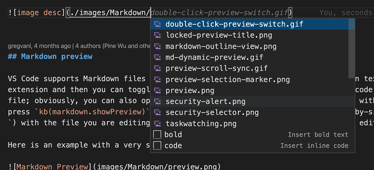
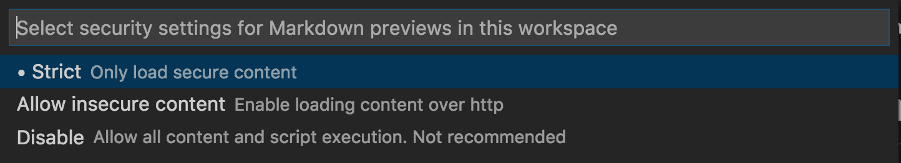

Markdown and Visual Studio Code
Working with Markdown files in Visual Studio Code is simple, straightforward, and fun. Besides VS Code's basic editing, there are a number of Markdown specific features that will help you be more productive.
Editing Markdown
Document outline
The Outline view is a separate section in the bottom of the File Explorer. When expanded, it will show the symbol tree of the currently active editor. For Markdown files, the symbol tree is the Markdown file's header hierarchy.

The Outline view is a great way to review your document's header structure and outline.
Snippets for Markdown
There are several built-in Markdown snippets included in VS Code - press Space (Windows, Linux Ctrl+Space) (Trigger Suggest) and you get a context specific list of suggestions.
Tip: You can add in your own User Defined Snippets for Markdown. Take a look at User Defined Snippets to find out how.
Go to header in file
Use O (Windows, Linux Ctrl+Shift+O) to quickly jump to a header in the current file.
You can browse through all headers in the file or start typing a header name to find just the one you are after. Once you've found the header you what, press Enter to move your cursor to it. Press Esc to cancel jumping to the header.
Go to header in workspace
Use T (Windows, Linux Ctrl+T) to search through headers across all Markdown files in the current workspace.

Start typing a header name to filter down the list and find the header you are after.
Path completions
Path completions help with create links to files and images. These paths are shown automatically by IntelliSense as you type the path of an image or link, and can also be manually requested by using Space (Windows, Linux Ctrl+Space).

Paths starting with / are resolved relative to the current workspace root, while paths staring with ./ or without any prefix are resolved relative to the current file. Path suggestions are automatically shown when you type / or can be manually invoked by using Space (Windows, Linux Ctrl+Space).
Path IntelliSense can also help you link to headers within the current file or within another Markdown file. Start the path with # to see completions for all the headers in the file (depending on your settings, you may need to use Space (Windows, Linux Ctrl+Space) to see these):
You can disable path IntelliSense with "markdown.suggest.paths.enabled": false.
Drag and drop to insert links and images
Quickly insert images and file links by dragging and dropping. To start, drag a file from VS Code's explorer over your Markdown code and then hold down Shift to start dropping it into the file. The preview cursor shows where it will be inserted when you drop it.

Dropped images insert a Markdown image . Dropped files insert a normal Markdown link [](path/to/file.md).
Smart selection
Smart selection lets you quickly expand and shrink selection in Markdown documents. This can be used to quickly select entire block elements (such as codeblocks or tables) and to select the entire contents of a header section in the Markdown file.
Smart selection uses the following commands:
- Expand: (Windows, Linux Shift+Alt+Right)
- Shrink: (Windows, Linux Shift+Alt+Left)
Selection applies to the following, and follows a traditional hierarchical pattern:
- Headers
- Lists
- Block quotes
- Fenced code blocks
- Html code blocks
- Paragraphs

Link validation
Link validation checks local links in your Markdown code to make sure they are valid. This can catch common mistakes, such linking to a header that has been renamed or to a file that no longer exists on disk.

Link validation is off by default. To enable it, just set "markdown.validate.enabled": true. VS Code will then analyze Markdown links to headers, images, and other local files. Invalid links will be reported as either warnings or errors. All link validation happens locally and there is no checking of external http(s) links.
There are a few settings you can use to customize link validation:
markdown.validate.fileLinks.enabled-Enable/disable validation of links to local files:[link](/path/to/file.md)markdown.validate.fragmentLinks.enabled-Enable/disable validation of links to headers in the current file:[link](#_some-header)markdown.validate.fileLinks.markdownFragmentLinks-Enabled/disable validation of links to to headers in the other markdown file:[link](other-file.md#some-header)markdown.validate.referenceLinks.enabled-Enable/disable validation of reference links:[link][ref].markdown.validate.ignoredLinks-A list of link globs that skip validation. This is useful if you link to files that don't exist on disk but do exist once the Markdown has been published.
Find All References to headers and links
Use the Find All References (F12 (Windows, Linux Shift+Alt+F12)) command to find all locations in the current workspace where a Markdown header or link is referenced:

Find All References is supported for:
- Headers:
# My Header. Shows all links to#my-header. - External links:
[text](http://example.com). Shows all links tohttp://example.com. - Internal links:
[text](./path/to/file.md). Shows all links to./path/to/file.md - Fragments in links:
[text](./path/to/file.md#my-header). Shows all links to#my-headerin./path/to/file.md
Rename headers and links
Tired of accidentally breaking links when you change a Markdown header? Try using Rename Symbol (F2) instead. After you type the new header name and press Enter, VS Code will update the header as well as automatically updating all links to that header:

You can also use F2 on:
- Headers:
# My Header. This will update all links to#my-header. - External links:
[text](http://example.com/page). This will update all places that linked tohttp://example.com/page - Internal links:
[text](./path/to/file.md). This will rename the file./path/to/file.mdand also update all links to it. - Fragments in links:
[text](./path/to/file.md#my-header). This will rename the header in./path/to/file.mdand also update all links to it.
Markdown preview
VS Code supports Markdown files out of the box. You just start writing Markdown text, save the file with the .md extension and then you can toggle the visualization of the editor between the code and the preview of the Markdown file; obviously, you can also open an existing Markdown file and start working with it. To switch between views, press V (Windows, Linux Ctrl+Shift+V) in the editor. You can view the preview side-by-side (K V (Windows, Linux Ctrl+K V)) with the file you are editing and see changes reflected in real-time as you edit.
Here is an example with a simple file.

Tip: You can also right-click on the editor Tab and select Open Preview (V (Windows, Linux Ctrl+Shift+V)) or use the Command Palette (P (Windows, Linux Ctrl+Shift+P)) to run the Markdown: Open Preview to the Side command (K V (Windows, Linux Ctrl+K V)).
Dynamic previews and preview locking
By default, Markdown previews automatically update to preview the currently active Markdown file:

You can lock a Markdown preview using the Markdown: Toggle Preview Locking command to keep it locked to its current Markdown document. Locked previews are indicated by [Preview] in the title:

Note: The Markdown: Toggle Preview Locking command is available only if Markdown preview is the active Tab.
Editor and preview synchronization
VS Code automatically synchronizes the Markdown editor and the preview panes. Scroll the Markdown preview and the editor is scrolled to match the preview's viewport. Scroll the Markdown editor and the preview is scrolled to match its viewport:

You can disable scroll synchronization using the markdown.preview.scrollPreviewWithEditor and markdown.preview.scrollEditorWithPreview settings.
The currently selected line in the editor is indicated in the Markdown preview by a light gray bar in the left margin:

Additionally, double clicking an element in the Markdown preview will automatically open the editor for the file and scroll to the line nearest the clicked element.
Extending the Markdown preview
Extensions can contribute custom styles and scripts to the Markdown preview to change its appearance and add new functionality. Here's a set of example extensions that customize the preview:
Using your own CSS
You can also use your own CSS in the Markdown preview with the "markdown.styles": [] setting. This lists URLs for style sheets to load in the Markdown preview. These stylesheets can either be https URLs, or relative paths to local files in the current workspace.
For example, to load a stylesheet called Style.css at the root of your current workspace, use File > Preferences > Settings to bring up the workspace settings.json file and make this update:
// Place your settings in this file to overwrite default and user settings.
{
"markdown.styles": ["Style.css"]
}
Keep trailing whitespace in order to create line breaks
To create hard line breaks, Markdown requires two or more spaces at the end of a line. Depending on your user or workspace settings, VS Code may be configured to remove trailing whitespace. In order to keep trailing whitespace in Markdown files only, you can add these lines to your settings.json:
{
"[markdown]": {
"files.trimTrailingWhitespace": false
}
}
Markdown preview security
For security reasons, VS Code restricts the content displayed in the Markdown preview. This includes disabling script execution and only allowing resources to be loaded over https.
When the Markdown preview blocks content on a page, an alert popup is shown in the top right corner of the preview window:

You can change what content is allowed in the Markdown preview by clicking on this popup or running the Markdown: Change preview security settings command in any Markdown file:

The Markdown preview security settings apply to all files in the workspace.
Here are the details about each of these security levels:
Strict
This is the default setting. Only loads trusted content and disables script execution. Blocks http images.
It is strongly recommended that you keep Strict security enabled unless you have a very good reason to change it AND you trust all Markdown files in the workspace.
Allow insecure content
Keeps scripts disabled but allows content to be loaded over http.
Disable
Disables additional security in the preview window. This allows script execution and also allows content to be loaded over http.
Markdown extensions
In addition to the functionality VS Code provides out of the box, you can install an extension for greater functionality.
Tip: Select an extension tile above to read the description and reviews to decide which extension is best for you. See more in the Marketplace.
Next steps
Read on to find out about:
- CSS, SCSS, and Less - Want to edit your CSS? VS Code has great support for CSS, SCSS, and Less editing.
Common questions
Is there spell checking?
Not installed with VS Code but there are spell checking extensions. Check the VS Code Marketplace to look for useful extensions to help with your workflow.
Does VS Code support GitHub Flavored Markdown?
No, VS Code targets the CommonMark Markdown specification using the markdown-it library. GitHub is moving toward the CommonMark specification, which you can read about in this update.